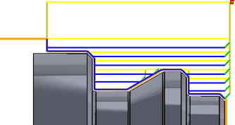

Décalage positif à l'arrière
Indique la distance à usiner au-delà de l'arrière du modèle.
Limitation avec décalages
 |
Décalage négatif à l'arrière |
|
Décalage positif à l'arrière |
REMARQUE: ce décalage s'applique à l'arrière du modèle ou de la zone de limitation, et peut s'utiliser en même temps qu'un décalage à l'avant.